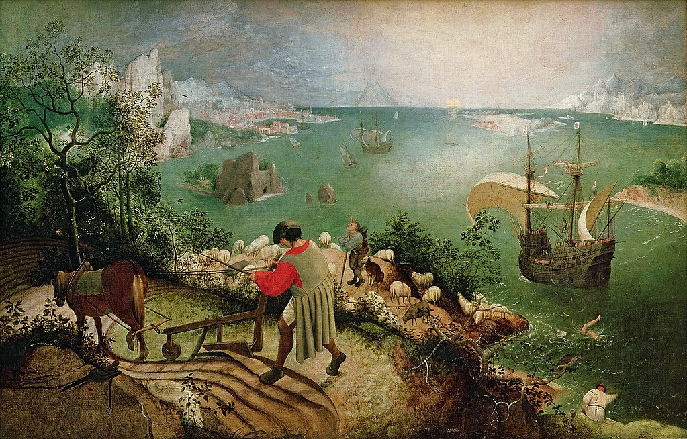

<head>
<meta charset="UTF-8" />
<meta name="keywords" content="drawing, painting" />
<meta name="description" content="drawings by Sunjy" />
<title>Sunjy</title>
<link rel="shortcut icon" type="image/x-icon" href="../../mImages/mCommon/favicon.ico" media="screen" />
<link rel="stylesheet" type="text/css" href="../../mCsses/mCommon/mCssA.css" />
<link rel="stylesheet" type="text/css" href="../../mCsses/mCommon/mCssB.css" />
<link rel="stylesheet" type="text/css" href="../../mCsses/mCommon/mCssC.css" />
<link rel="stylesheet" type="text/css" href="../../mCsses/mCommon/mCssD.css" />
<link rel="stylesheet" type="text/css" href="../../mCsses/mContent/mCssA.css" />
<link rel="stylesheet" type="text/css" href="../../mCsses/mContent/mCssB.css" />
<link rel="stylesheet" type="text/css" href="../../mCsses/mContent/mCssC.css" />
<link rel="stylesheet" type="text/css" href="../../mCsses/mContent/mCssD.css" />
</head>
<script type="text/javascript" src="../../mScripts/mContent/mContentAA.js" /></script>
<script type="text/javascript" src="../../mScripts/mContent/mContentAB.js" /></script>
<script type="text/javascript" src="../../mScripts/mContent/mContentAC.js" /></script>
<script type="text/javascript" src="../../mScripts/mContent/mContentAD.js" /></script>
<script type="text/javascript"></script> 
<script type="text/javascript">
document.write('<div class="mImgAbsolute"></div>');
/*
document.write('<p class="mFontSizeBColor" />From a white paper...</p>');
document.write('<table class="center"><tr><td>');
document.write('');
document.write('</td></tr></table>');
*/
</script>


<script type="text/javascript">
document.write('<p class="mFontSizeBColor" />Landscape with the Fall of Icarus</p>');
document.write('<p class="mFontSizeSColor" />“Landscape with the Fall of Icarus” by Pieter Brueghel, the Elder, was long thought to be painted by Pieter Bruegel, the Elder. However, following recent technical examinations, it is now regarded as an excellent early copy by an unknown artist of Bruegel’s lost original.<br><br>In Greek mythology, Icarus who succeeded in flying, with wings made by his father, using feathers and beeswax.<br><br>Unfortunately, Icarus ignored his father’s warnings, and he flew too close to the sun, melting the wax, and he fell into the sea and drowned. His legs can be seen in the water at the bottom right.<br><br>The plowman, shepherd, and angler are mentioned in famous Ovid’s account of the legend, in which they are:<br><br>“astonished and think to see gods approaching them through the aether.” <br><br>The painting contains these figures, but they seem to be oblivious to Icarus’s fate. This composition may be intended to illustrate the Flemish proverb:<br><br>“And the farmer continued to plow…”<br><br>Thus the painting is highlighting humanity’s indifference to other people’s suffering. As Auden’s poem suggests, this composition depicts humankind’s indifference to other people’s pain by underscoring the ordinary events which continue to occupy our lives. <br><br>Additionally, the traditional moral story of the Icarus, which warns against excessive ambition, is reinforced by the more humble figures who seem content to fill useful roles in life.<br></p>');
document.write('<table class="center" /><tr><td>');
document.write('<br>In Greek mythology, Icarus who succeeded in flying, with wings made by his father, using feathers and beeswax.<br><br>Unfortunately, Icarus ignored his father’s warnings, and he flew too close to the sun, melting the wax, and he fell into the sea and drowned. His legs can be seen in the water at the bottom right.<br><br>The plowman, shepherd, and angler are mentioned in famous Ovid’s account of the legend, in which they are:<br><br>“astonished and think to see gods approaching them through the aether.” <br><br>The painting contains these figures, but they seem to be oblivious to Icarus’s fate. This composition may be intended to illustrate the Flemish proverb:<br><br>“And the farmer continued to plow…”<br><br>Thus the painting is highlighting humanity’s indifference to other people’s suffering. As Auden’s poem suggests, this composition depicts humankind’s indifference to other people’s pain by underscoring the ordinary events which continue to occupy our lives. <br><br>Additionally, the traditional moral story of the Icarus, which warns against excessive ambition, is reinforced by the more humble figures who seem content to fill useful roles in life.<br>" />');
document.write('</td></tr></table>');
</script>


